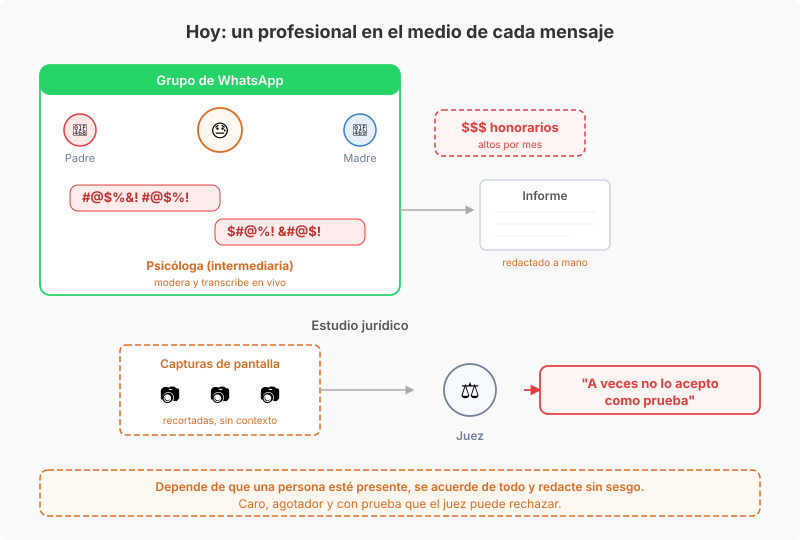
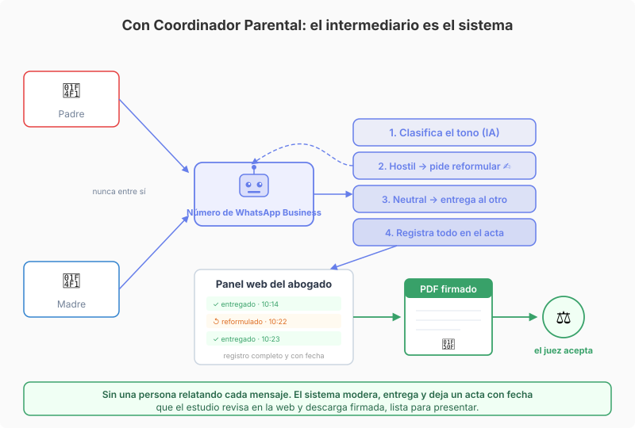

Dos padres separados que no logran hablar sin agredirse igual tienen que coordinar la vida de sus hijos: quién retira del colegio, cómo se reparten los gastos, qué pasa el fin de semana. Cada mensaje es una chispa. Y todo lo que se dicen puede terminar delante de un juez.
El problema
La solución habitual era poner a una psicóloga adentro de un grupo de WhatsApp con los dos padres. Ella oficiaba de intermediaria: leía cada mensaje, frenaba las agresiones, reformulaba lo que hacía falta y trataba de que la conversación no escalara. Cuando algo era relevante para la causa, lo transcribía en un informe para el estudio jurídico.
Ese esquema tiene tres problemas que se arrastran juntos. Depende de que una persona esté presente justo cuando llega el mensaje hostil, se acuerde de todo lo que pasó y lo redacte sin sesgo. El informe termina siendo la interpretación de la profesional, no el registro de lo que efectivamente se dijo. Y para llevar la prueba al juzgado, el estudio recurría a capturas de pantalla: recortadas, sin contexto, fáciles de discutir. Un juez a veces no las acepta como prueba.
Además está el costo. Tener a un profesional moderando cada intercambio en tiempo real se cobra caro por mes, y buena parte de esas horas se van en la tarea mecánica de leer, relatar y transcribir, no en el criterio clínico o legal que justifica su formación.

Nuestra solución
Construimos Coordinador Parental, una aplicación conectada a un número de WhatsApp Business. Los padres no se escriben entre sí: cada uno le escribe al número, y el sistema es el intermediario. Cada mensaje pasa por este circuito:
- Clasifica el tono. Un modelo de lenguaje evalúa cada mensaje entrante y decide si es neutral o si va cargado de hostilidad.
- Pide reformular lo hostil. Si el mensaje agrede, no se entrega. Vuelve al que lo escribió con una reescritura sugerida y opciones: enviar como está, usar la versión propuesta o editarla. La desescalada deja de depender de que alguien esté mirando en ese momento.
- Entrega lo neutral. Los mensajes que pasan el filtro se relayan al otro padre, con el mismo contenido pero sin la carga que enciende el conflicto.
- Registra todo en un acta. Cada mensaje, cada reformulación y cada consentimiento queda guardado con fecha y hora. No es una transcripción hecha de memoria: es el registro de lo que realmente pasó.
El estudio jurídico ve el hilo completo de cada caso y, cuando lo necesita, descarga un PDF listo para presentar ante el juez. En lugar de capturas sueltas que se pueden discutir, hay un acta íntegra, ordenada y con fecha. Es la diferencia entre "esto es lo que me acuerdo que pasó" y "esto es lo que pasó, acá está".

El intermediario no desaparece: cambia de naturaleza. La parte mecánica y agotadora, leer cada mensaje, moderar en el momento y transcribir, la hace el sistema, siempre, sin cansarse ni olvidarse. El criterio profesional queda para donde hace falta: el coordinador y el abogado revisan, deciden qué es relevante y firman. Se saca la fricción y el costo de tener a alguien tapando el agujero en tiempo real, y la prueba pasa a ser algo que el juzgado puede aceptar sin objeciones.
Dónde aplica el mismo patrón
El problema de fondo, comunicación entre partes en conflicto que después hay que probar ante un tercero, aparece en muchos contextos:
- Cuota alimentaria y régimen de visitas. Los acuerdos y sus incumplimientos se discuten por mensajes. Un registro con fecha, en vez de capturas, muestra quién propuso qué y quién no respondió.
- Conflictos de consorcio. Vecinos y administración cruzan reclamos que a veces terminan en mediación. Un canal moderado deja constancia de los pedidos y las respuestas sin que escale a la agresión personal.
- Relación laboral tensa. Intercambios entre un empleado y su empleador antes de un despido. Un acta ordenada vale más que un puñado de screenshots cuando el caso llega a un juzgado laboral.
- Atención al cliente en disputas. Reclamos que pueden derivar en defensa del consumidor. Moderar el tono de ida y vuelta y guardar el hilo completo protege a las dos partes.